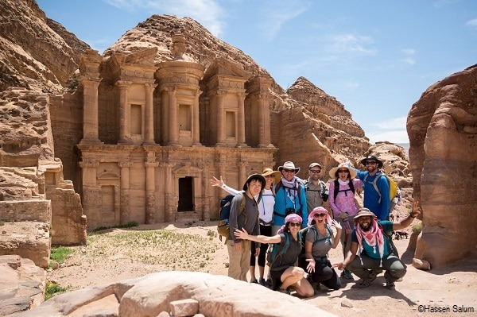
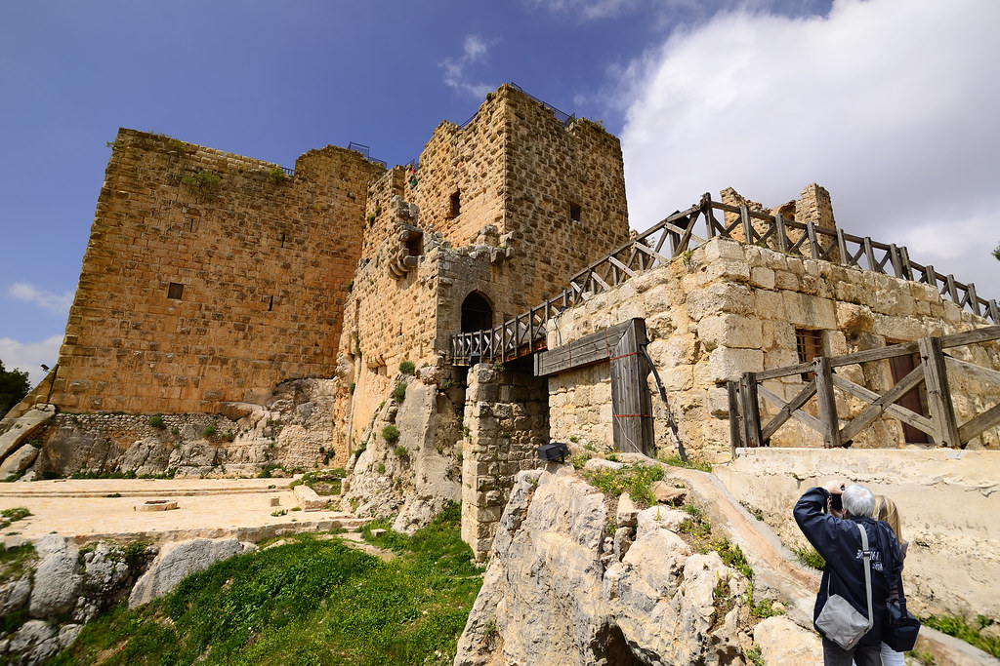
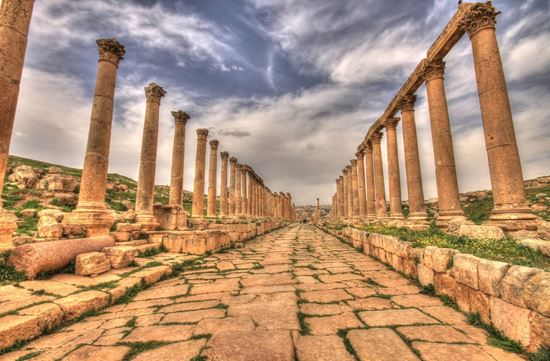
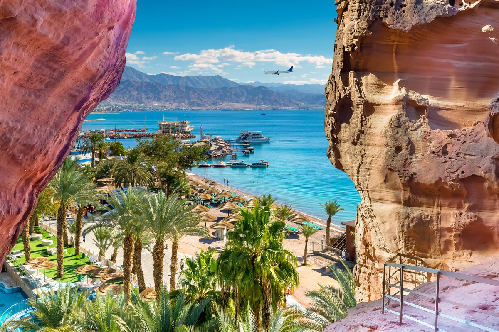

Petra
Explore Jordan’s famous jewel, Petra, and experience the most stunning sites of Jordan in a week. You will be taken 2,000 years back in time to discover the city of Petra, capital of the Nabataeans. This ancient civilization carved the city into the face of mountains and today it is considered one of the New Seven Wonders of the World.
Ajloun
The Ajlun mountains are famous for their lush vegetation and thick green forests and a good place for hikes. Its highest mountain peaks reach around 1268 meters above sea level and Ajloun mountains receive a few snow storms every year usually in winter season from December to March. It's one of the country's most beautiful regions. Ajlun has a Mediterranean weather rainy and snowy in winter season and pleasant in the summer time.
Jerash
The number of tourists who visited the ancient city of Jerash reached 214,000 during 2005. The number of non-Jordanian tourists was 182,000 last year,The Jerash Festival of Culture and Arts is an annual celebration of Arabic and international culture during the summer months. Jerash is located 48 km north of the capital city of Amman. The festival site is located within the ancient ruins of Jerash, some of which date to the Roman age (63 BC). Jerash Festival is a festival which features poetry recitals, theatrical performances, concerts and other forms of art.In 2008, authorities launched Jordan Festival, a nationwide theme-oriented event under which Jerash Festival became a component. However the government revived the Jerash Festival as the "substitute (Jordan Festival) proved to be not up to the message intended from the festival.
Aqaba
a coastal city with charm to spare. As well as being the perfect jumping off point to the best sites in Jordan, there are also plenty of things to do in Aqaba, making it a fantastic destination in its own right. Shop the colourful and community-led project Souk by the Sea to stock up on souvenirs from over 50 local artisans or embrace an aquatic adventure and unbelievably beautiful coral reefs at the world-class snorkelling and dive sites situated on the nearby coast. There’s no better place to enjoy some sun, sea and sand than Aqaba and the Red Sea, surrounded by the ever-watchful mountains and endless desert plains.